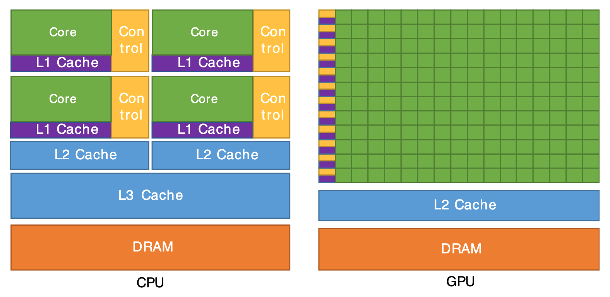
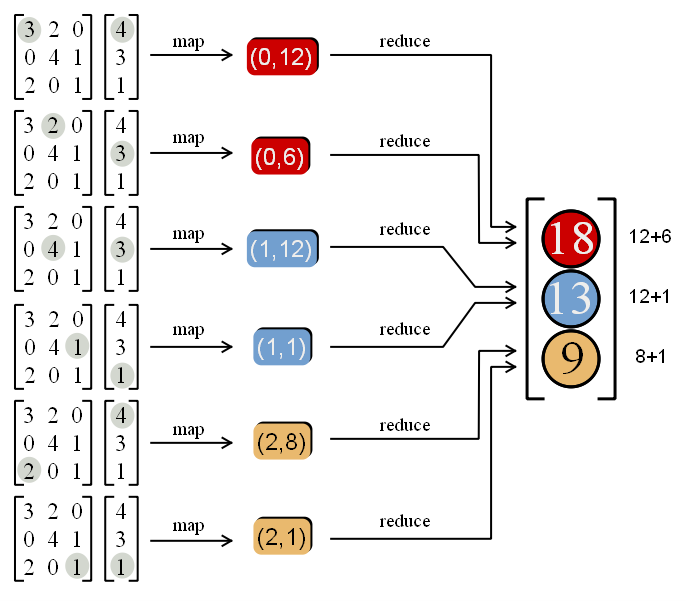
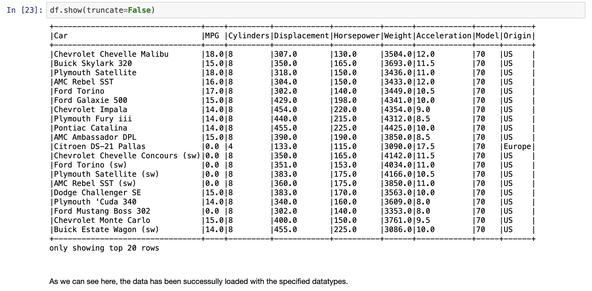
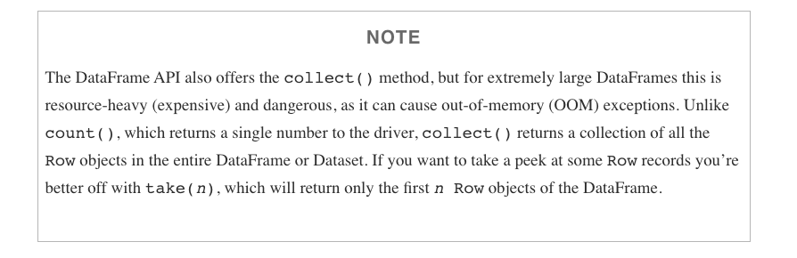
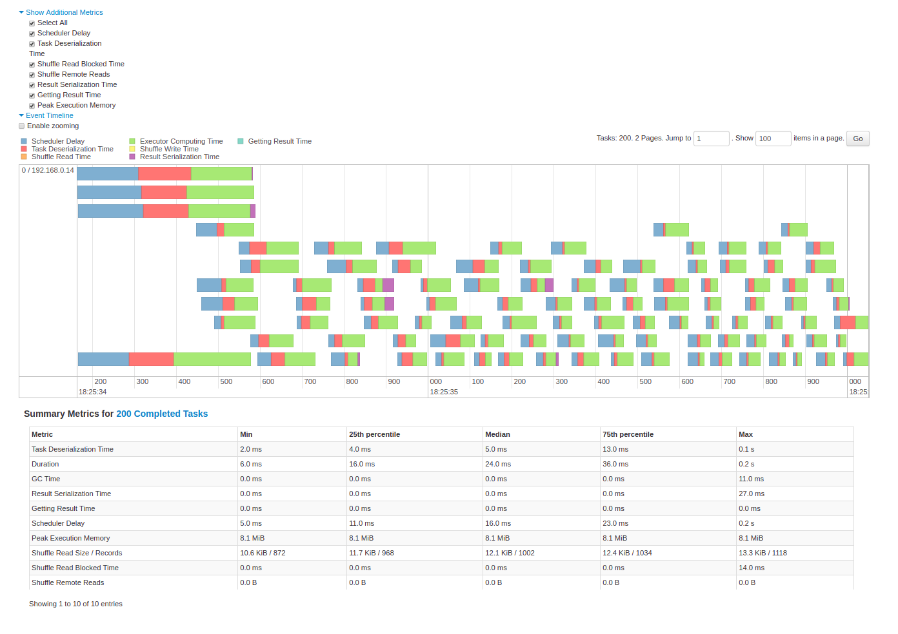
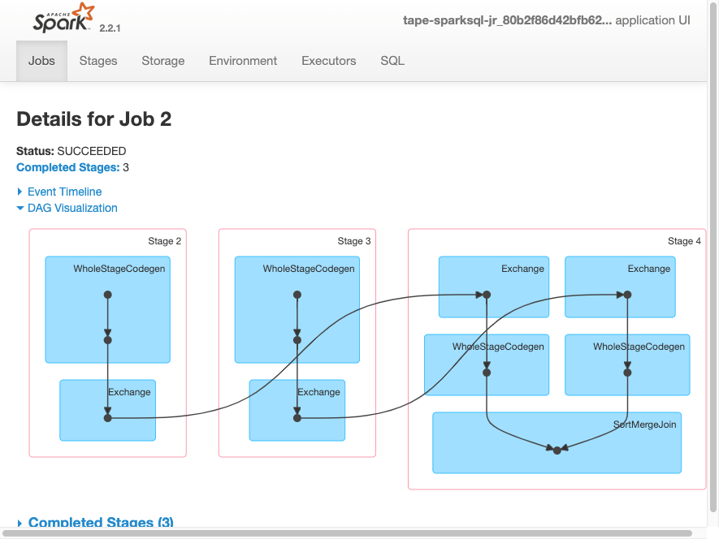
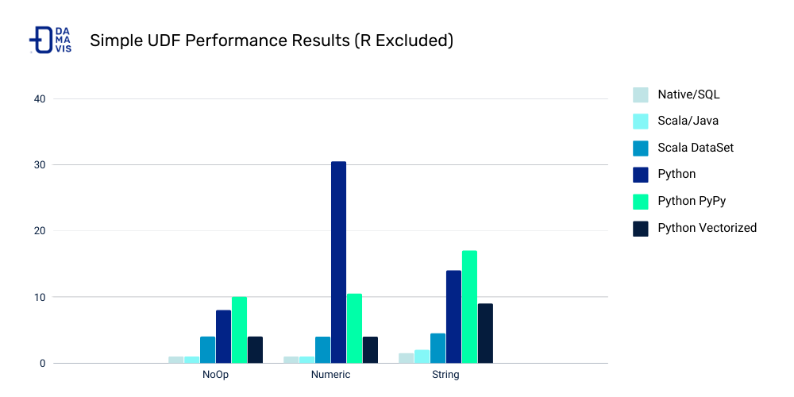
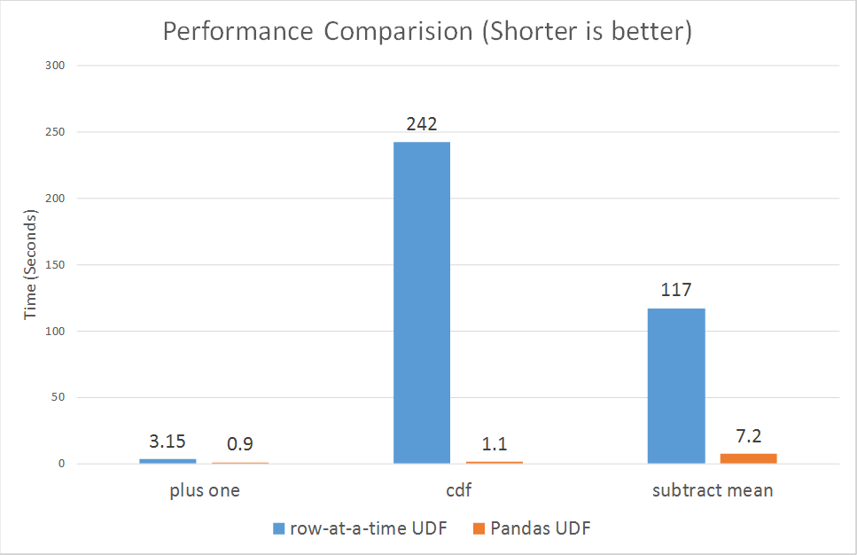

my_map = map(lambda input: input**2, [(1-2), (3-5), (2-0)])
map_result = list(my_map)
map_result[1, 4, 4]DSAN 6000: Big Data and Cloud Computing
Fall 2026
The content for today is split between the following two resources:
map(), functools.reduce())\[ \begin{align*} x = \frac{-b \pm \sqrt{b^2 - 4ac}}{2a} = \frac{-7 \pm \sqrt{49 - 4(6)(-3)}}{2(6)} = \frac{-7 \pm 11}{12} = \left\{\frac{1}{3},-\frac{3}{2}\right\} \end{align*} \]
| \(\leadsto\) If code is not embarrassingly parallel (instinctually requiring laborious serial execution), | \(\underbrace{6x^2 + 7x - 3 = 0}_{\text{Solve using Quadratic Eqn}}\) |
| But can be split into… | \((3x - 1)(2x + 3) = 0\) |
| Embarrassingly parallel pieces which combine to same result, | \(\underbrace{3x - 1 = 0}_{\text{Solve directly}}, \underbrace{2x + 3 = 0}_{\text{Solve directly}}\) |
| We can use map-reduce to achieve ultra speedup (running “pieces” on GPU!) | \(\underbrace{(3x-1)(2x+3) = 0}_{\text{Solutions satisfy this product}}\) |
map(do_something_with_piece, list_of_pieces)my_map = map(lambda input: input**2, [(1-2), (3-5), (2-0)])
map_result = list(my_map)
map_result[1, 4, 4]reduce(how_to_combine_pair_of_pieces, pieces_to_combine)from functools import reduce
my_reduce = reduce(lambda piece1, piece2: piece1 + piece2, map_result)
my_reduce9



Adapted from/almost identical to Jacob Celestine’s tutorial

https://s3.amazonaws.com/assets.datacamp.com/blog_assets/PySpark_SQL_Cheat_Sheet_Python.pdf
collect CAUTION
Spark Application UI shows important facts about you Spark job:
Adapted from AWS Glue Spark UI docs and Spark UI docs




Problem: make a new column with ages for adults-only
+-------+--------------+
|room_id| guests_ages|
+-------+--------------+
| 1| [18, 19, 17]|
| 2| [25, 27, 5]|
| 3|[34, 38, 8, 7]|
+-------+--------------+Adapted from UDFs in Spark
```{python}
from pyspark.sql.functions import udf, col
@udf("array<integer>")
def filter_adults(elements):
return list(filter(lambda x: x >= 18, elements))
# alternatively
from pyspark.sql.types IntegerType, ArrayType
@udf(returnType=ArrayType(IntegerType()))
def filter_adults(elements):
return list(filter(lambda x: x >= 18, elements))
```+-------+----------------+------------+
|room_id| guests_ages | adults_ages|
+-------+----------------+------------+
| 1 | [18, 19, 17] | [18, 19]|
| 2 | [25, 27, 5] | [25, 27]|
| 3 | [34, 38, 8, 7] | [34, 38]|
| 4 |[56, 49, 18, 17]|[56, 49, 18]|
+-------+----------------+------------+```{python}
# Spark 3.1
from pyspark.sql.functions import col, filter, lit
df.withColumn('adults_ages',
filter(col('guests_ages'), lambda x: x >= lit(18))).show()
``````{python}
from pyspark.sql.functions import udf
from pyspark.sql.types import LongType
# define the function that can be tested locally
def squared(s):
return s * s
# wrap the function in udf for spark and define the output type
squared_udf = udf(squared, LongType())
# execute the udf
df = spark.table("test")
display(df.select("id", squared_udf("id").alias("id_squared")))
``````{python}
from pyspark.sql.functions import udf
@udf("long")
def squared_udf(s):
return s * s
df = spark.table("test")
display(df.select("id", squared_udf("id").alias("id_squared")))
``````{sql}
spark.udf.register("squaredWithPython", squared)
select id, squaredWithPython(id) as id_squared from test
```
Costs:
Other ways to make your Spark jobs faster source:
From PySpark docs - Pandas UDFs are user defined functions that are executed by Spark using Arrow to transfer data and Pandas to work with the data, which allows vectorized operations. A Pandas UDF is defined using the pandas_udf as a decorator or to wrap the function, and no additional configuration is required. A Pandas UDF behaves as a regular PySpark function API in general.
```{python}
@pandas_udf("string")
def to_upper(s: pd.Series) -> pd.Series:
return s.str.upper()
df = spark.createDataFrame([("John Doe",)], ("name",))
df.select(to_upper("name")).show()
+--------------+
|to_upper(name)|
+--------------+
| JOHN DOE|
+--------------+
``````{python}
@pandas_udf("first string, last string")
def split_expand(s: pd.Series) -> pd.DataFrame:
return s.str.split(expand=True)
df = spark.createDataFrame([("John Doe",)], ("name",))
df.select(split_expand("name")).show()
+------------------+
|split_expand(name)|
+------------------+
| [John, Doe]|
+------------------+
``````{python}
from pyspark.sql.functions import udf
# Use udf to define a row-at-a-time udf
@udf('double')
# Input/output are both a single double value
def plus_one(v):
return v + 1
df.withColumn('v2', plus_one(df.v))
``````{python}
from pyspark.sql.functions import pandas_udf, PandasUDFType
# Use pandas_udf to define a Pandas UDF
@pandas_udf('double', PandasUDFType.SCALAR)
# Input/output are both a pandas.Series of doubles
def pandas_plus_one(v):
return v + 1
df.withColumn('v2', pandas_plus_one(df.v))
``````{python}
@pandas_udf(df.schema, PandasUDFType.GROUPED_MAP)
# Input/output are both a pandas.DataFrame
def subtract_mean(pdf):
return pdf.assign(v=pdf.v - pdf.v.mean())
df.groupby('id').apply(subtract_mean)
```Input of the user-defined function:
Output of the user-defined function:
Grouping semantics:
Output size:
